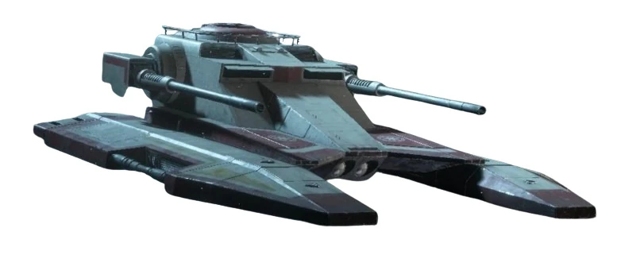
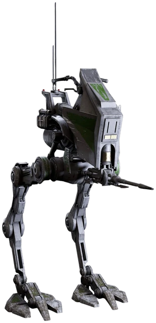
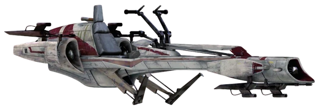
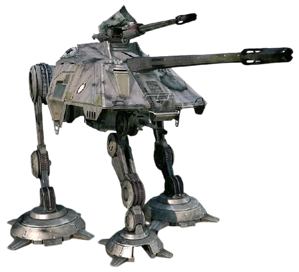

Espace Officier
Section réservée au corps des officiers de la 501st. Saisissez le code d'accès régimentaire.
🔒 Espace Officier
Voici l'espace officiel des officiers de la 501st Légion d'Attaque. Vous trouverez ici tous les documents nécessaires à la direction du régiment.
📘 Fonctionnement Doc' Effectif
Le tableau d'effectif en direct (ajout/modification/suppression de membres, éligibilité aux promotions, répartition par spécialisation) a sa propre page : 📋 Effectif. Les rapports hebdomadaires se soumettent et se modèrent sur la page 🗒️ Rapport.
Le document d'effectif constitue l'outil central de gestion du régiment : il permet de suivre les membres de la 501st, de visualiser leur progression en grades et formations, et de maintenir la cohérence entre le roleplay et la gestion interne. C'est une référence officielle, pas un outil décoratif.
Principes généraux
- Respecter l'exactitude des informations inscrites.
- Mettre à jour immédiatement après tout changement RP.
- Vérifier la cohérence avec les informations Discord.
- Appliquer les consignes fournies.
Gestion des membres
Chaque profil membre doit contenir : identité RP, matricule, identifiants Discord/Steam (ID64 et ID32), grade actuel, spécialisation, et date de dernière promotion/rétrogradation.
Promotion et rétrogradation
- Déplacer la ligne complète en haut du nouveau grade.
- Mettre à jour grade, dates et quotas de lead.
- Vérifier les prérequis du nouveau grade.
- Valider via le canal Discord dédié.
Formations (statuts)
- ❌ Non validée (accessible mais non effectuée)
- ⚙️ En cours (reçue, en attente de validation)
- ✅ Validée (complète et reconnue)
🧭 Promoteur : Grades
Toute personne respectant le tableau ci-dessous est autorisée à promouvoir une unité, en accord avec le reste du corps officier et le commandement.
| Promoteur | Promu au maximum | Nécessaire pour être promu |
|---|---|---|
| 2nd-LTN | CPL | CPL-C : FIR obligatoire |
| LTN | CPL-C | SGT : formation lead & formation TX-130 |
| CPT-2nd | SGT / SGT-C | SGT-C : formation Recrutement & formation régimentaire 501st |
| CPT | ADJ / ADJ-C | ADJ-C : être formateur régimentaire 501st |
| MJR | LTN-2nd / LTN | CPT : formation Commandant de mission |
| V-CMD | CPT-2nd / CPT | Aucun |
| CMD | MJR | Aucun |
Une promotion représente une confiance supplémentaire accordée à l'unité. Les officiers sont responsables des conséquences si une promotion contredit les décisions de leurs supérieurs.
🚜 Formations Véhicules
« Puissance blindée au service de la République. » Au sein de la 501st Légion, l'excellence ne se limite pas à l'infanterie. Nos unités blindées incarnent la force de frappe mécanisée de la Grande Armée de la République. Les formations véhicules sont ouvertes à tous les clones souhaitant maîtriser l'art de la guerre mécanisée, à travers quatre machines : TX-130, AT-RT, BARC Speeder et AT-AP.
🎖️ Formation de Conducteurs & Commandants de Véhicules
À partir du grade d'Adjudant (ADJ), les clones peuvent devenir formateurs ou commandants de véhicules : former de nouveaux conducteurs, coordonner des escouades mécanisées, et participer à l'élaboration des stratégies blindées de la Légion.

TX-130 Saber-Class Fighter Tank
Ce tank rapide et maniable excelle en soutien rapproché. Équipé de canons laser lourds et de missiles guidés, il est idéal pour des interventions précises et offensives.
Fiche technique
| Constructeur | Ingénierie Lourde de Rothana |
|---|---|
| Classe | Tank à répulseurs |
| Dimensions | 3,05 × 8,20 × 2,30 m (l × L × h) |
| Vitesse | 90 km/h |
| Propulsion | 6 répulseurs (4 sous le véhicule, 2 à l'arrière) |
| Défense | 2 générateurs de bouclier Exo Shell 3, blindage en composite réactif |
| Armement | 2 doubles canons laser lourds, 2 lance-missiles à concussion (16 missiles), tourelle rotative supérieure |
| Équipage | 1 pilote, 1 artilleur |
| Capacité de soute | 3 passagers + 750 kg |
Description
Le TX-130 est équipé d'un canon laser principal monté sur tourelle, capable de perforer les blindages ennemis avec précision, ainsi que de canons blaster latéraux et d'un large magasin de missiles à concussion. La tourelle supérieure a une écoutille ouvrable pour le canonnier, mais la porte arrière est un point faible : les dégâts y sont plus graves qu'ailleurs sur le véhicule. Contrairement à des véhicules plus massifs, il est conçu pour être rapide et agile, aussi bien en terrain accidenté qu'en zone urbaine, et peut être configuré pour la reconnaissance, le support d'infanterie ou la suppression de cibles aériennes légères.
Règle n°1 : toujours garder la porte fermée lors du moindre déplacement.
- Canon 1 : canon lourd à tir alterné, destiné aux véhicules et à l'artillerie ennemie.
- Canon 2 : canons légers à tir continu, destinés à l'infanterie.
- Canon 3 : tirs ioniques chargés (maintenir le bouton de tir).
- Missile : missile à concussion, utile pour infliger de gros dégâts dans les lignes ennemies.
Utilisation
Souvent utilisé en pointe de formation pour maximiser sa puissance, très efficace contre l'infanterie et les véhicules légers, mais cible facile face à un groupe fortement blindé : il est donc déployé avec des unités d'infanterie assurant un tir d'appui.
Formation
À partir du grade CT, possibilité de demander une formation pour piloter le TX-130 ; à partir du grade Sergent, possibilité d'être formateur.
- Expliquer le fonctionnement du TX-130 et comment changer les commandes.
- Commencer à faire un parcours en zigzag.
- Faire monter sur une plaque/falaise inclinée « en crabe » (sur le côté).
- Si possible, faire essayer le TX-130 dans l'eau.
- Faire l'épreuve de tir (missiles, canons, tourelle) ; si possible demander à un staff de faire spawn un CAB en pilote automatique pour un combat.
- Faire rentrer l'unité en autonomie sur le tarmac (pilotage auto, stationnement).

AT-RT (All Terrain Recon Transport)
Fiche technique
| Constructeur | Ingénierie Lourde de Rothana |
|---|---|
| Classe | Véhicule de reconnaissance |
| Dimensions | 1,2 × 2,9 × 3,2 m (l × L × h) |
| Vitesse | 9 à 55 km/h |
| Propulsion | Jambes mécaniques à répulseurs |
| Défense | Blindage léger en duracier |
| Armement | 1 canon blaster lourd |
| Équipage | 1 pilote |
Description
Véhicule de reconnaissance agile et polyvalent, monté sur deux jambes mécaniques à répulseurs lui permettant de traverser facilement des terrains variés et accidentés. Spécialement optimisé pour les missions de reconnaissance, de patrouille et de soutien rapide d'infanterie. Le blindage léger en duracier offre une protection suffisante contre les tirs légers, mais l'AT-RT n'encaisse pas les attaques lourdes ; sa conception ouverte offre une visibilité maximale au pilote tout en le rendant vulnérable.
Utilisation
Reconnaissance avancée, souvent en tandem avec l'infanterie ; sa vitesse et sa mobilité en font un outil indispensable, généralement utilisé pour éviter les confrontations directes avec des forces lourdement blindées, en coordination avec des véhicules plus lourds.
Formation
Pour avoir accès à la formation AT-RT, il faut être membre des ARF ou des ARC.
- Expliquer le fonctionnement de l'AT-RT, les commandes, et le faire manipuler correctement.
- Faire des tours de terrain, marche avant et arrière.
- Faire passer sur des terrains vagues.
- Faire l'épreuve de tir (canon principal).
- Faire tester le jump de l'AT-RT.
- Faire rentrer l'unité en autonomie sur le tarmac (pilotage auto, stationnement).

BARC Speeder
Description
Speeder de reconnaissance à grande vitesse, alliant vitesse, maniabilité et puissance de feu légère. Silhouette allongée reposant sur un système de répulseurs qui lui permet de léviter à faible altitude et de franchir facilement obstacles, terrains accidentés et zones forestières, pouvant dépasser les 110 km/h. Équipé de deux canons laser rotatifs à l'avant, tirant avec précision même à grande vitesse. Certaines variantes acceptent un sidecar permettant d'embarquer un second soldat ou un artilleur, transformant le speeder en plateforme de soutien mobile. On le retrouve fréquemment sur des planètes comme Saleucami, Felucia ou Umbara, pour des patrouilles silencieuses ou des embuscades rapides. N'offre pas de protection particulière au pilote, hormis sa vitesse et sa maniabilité.
Utilisation
Reconnaissance rapide, patrouilles et frappes éclair ; harcèlement de l'ennemi, tir en mouvement puis repli rapide ; escorte de convois, poursuite de fuyards ou transport de messages/matériel léger entre deux positions. Sa petite taille lui permet de circuler en environnements denses (jungles, villes) inaccessibles aux véhicules plus lourds.
Formation
Pour avoir accès à la formation Barc Speeder, il faut rejoindre la compagnie Torrent de la 501st.
- Expliquer le fonctionnement du Barc Speeder, les commandes, et le faire manipuler correctement.
- Faire des tours de terrain, marche avant et arrière.
- Faire passer sur des terrains vagues.
- Faire l'épreuve de tir (canon principal).
- Faire rentrer l'unité en autonomie sur le tarmac (pilotage auto, stationnement).

AT-AP (Walker)
Fiche technique
| Constructeur | Chantiers Techniques de Rothana |
|---|---|
| Classe | Artillerie mobile / char d'appui tripode |
| Vitesse | 17 km/h (jusqu'à 20 km/h en accélération) |
| Propulsion | 2 pattes mécaniques principales + 1 patte ventrale escamotable (stabilisation de tir) |
| Équipage | 1 pilote, 1 artilleur |
| Armement | 1 canon lourd à projectiles de masse (avant), tourelle inférieure pilote (180°), canon artilleur (360°) |
Description
Char d'artillerie tripode ayant notamment servi sur Felucia et Kashyyyk. Ses deux pattes principales assurent la mobilité, tandis qu'une troisième patte ventrale escamotable se déploie pour stabiliser le véhicule lors de tirs de haute précision. Le pilote dispose d'une tourelle inférieure pouvant tirer sur 180°, principalement utilisée contre l'infanterie, ainsi que d'un second canon anti-véhicule/anti-groupe utilisable uniquement lorsque la troisième patte est déployée. L'artilleur contrôle un canon rotatif à 360° assurant un soutien à l'arrière, efficace contre tous types d'ennemis. Son canon lourd à projectiles de masse à l'avant, à longue portée et grande précision, lui vaut le surnom de « char tireur d'élite ».
Utilisation
Artillerie mobile et char d'appui ; sa troisième patte déployée lui permet de délivrer des tirs de précision redoutables, tandis que sa tourelle inférieure et le canon de l'artilleur couvrent l'infanterie ennemie à courte comme à longue distance.
Formation
Réservée aux membres Heavy, ARF ou ARC, ainsi qu'au commandement régimentaire et aux officiers, à partir du grade de Sergent (SGT).
- Expliquer le fonctionnement de l'AT-AP, les commandes, et le faire manipuler correctement.
- Faire des tours de terrain, marche avant et arrière.
- Faire déployer et rétracter la troisième patte de stabilisation.
- Faire l'épreuve de tir avec la tourelle inférieure (pilote) et le canon d'artilleur (360°).
- Faire l'épreuve de tir avec la troisième patte déployée (canon anti-véhicule).
- Faire rentrer l'unité en autonomie sur le tarmac (pilotage auto, stationnement).
🎖️ Promoteur : Médailles
Les médailles accompagnent la carrière des soldats pour les faire évoluer et les récompenser. Il convient de ne pas en attribuer trop à bas grade, afin de laisser place à des récompenses futures. Les médailles doivent correspondre au mérite du membre ; si aucune ne lui correspond, aucune médaille ne doit lui être accordée.
Limites par grade
CT (0) · CPL/CPL-C (1) · SGT/SGT-C (2) · ADJ/ADJ-C (3) · 2nd LTN/LTN (4) · CPT-2nd/CPT (6) · MJR (7)
Les 7 médailles de la 501st
- Survivant : pour les unités ayant survécu à de nombreuses batailles, représentant la devise régimentaire.
- Tireur d'Élite : pour les unités démontrant une capacité à atteindre n'importe quelle cible.
- Soldat d'Élite : récompense les membres qui savent impliquer et discerner dans leur comportement durant les opérations, la dignité et la qualité.
- Vétéran : attribuée après plus de 5 mois de présence continue.
- Honneur : pour comportement exemplaire en base et en mission.
- Excellence : pour les membres honorant le régiment et prouvant quotidiennement leur mérite auprès des officiers supérieurs.
- Commandement : réservée aux officiers ayant démontré des qualités exceptionnelles de leader.
🪐 Affiliation régimentaire
Répartition des référents et affiliations transversales du régiment.
Commandant Jedi
Référent Jedi rattaché au commandement de la 501st.
Arc Alpha
Référent régimentaire des ARC Troopers ; reçoit leurs rapports hebdomadaires (voir page ARC Trooper).
Marine Référant
Référent de liaison avec les unités navales de la flotte Cosmos.
📝 Recrutement : Entretien CT ASP
Test d'entretien optionnel permettant à un officier au grade de Capitaine en Second (CPT-2nd) d'évaluer un CT ASP ayant déjà effectué une ou plusieurs missions avec la 501st et ayant pu être observé par le corps officier. Le but est de valider une impression sur la personnalité et le sérieux du postulant, plutôt que d'évaluer ses connaissances.
⚠️ Consignes préliminaires
- Durée à prévoir : entre 10 et 15 minutes.
- Vérifier que le CT ASP possède un matricule correct (format : CT ASP 0000 Alias).
- La forme est plus importante que le fond : on recherche prioritairement un profil adéquat aux valeurs régimentaires ; les compétences pourront être améliorées ensuite grâce à nos enseignements.
- Ce test n'est pas obligatoire : seul un officier au grade de CPT-2nd peut décider de le réaliser, et doit le mener lui-même. S'il estime ne pas avoir le temps, si aucun membre du régiment au grade requis n'est disponible, ou si l'aspirant n'a pas laissé une très bonne impression, le recrutement doit se faire de la manière standard.
- Les compétences et connaissances ne sont pas des prérequis : ne pas savoir répondre n'est pas un échec. L'échec, c'est de mal faire comprendre qu'on ne sait pas.
- Si l'aspirant répond à plusieurs questions en même temps via une seule réponse, les questions redondantes peuvent être annulées.
🔢 Codes des portes (bâtiment de recrutement)
| Porte principale | 0 |
|---|---|
| Bureau (porte à droite) | 2 |
| Salle de tir (porte en face) | 1 |
| Salle finale | 4 |
Chaque thème ci-dessous se note de 1 à 5, selon le sérieux et la personnalité perçus chez le candidat : la précision technique de ses réponses compte moins que son attitude. Remplis les notes au fil de l'entretien, puis envoie le formulaire à la fin : la réponse est automatiquement relayée dans le salon Discord dédié.
🎙️ Présentation du soldat
- Matricule et désignation, soldat.
- Quelles sont vos motivations pour rejoindre la 501st Légion ?
🎯 Motivation pour rejoindre la 501st
- Que fait le 501st sur le champ de bataille ?
🪖 Vision du rôle d'un clone
- Un clone doit-il réfléchir ou obéir ?
- Qu'est-ce qui est le plus important : survivre ou accomplir la mission ?
⚖️ Discipline militaire
- Que faites-vous si un ordre ne vous convient pas ?
- Pour vous, qu'est-ce que la discipline ?
🎯 Exercice de tir
- Expliquer à l'aspirant qu'il va réaliser un exercice de tir, puis l'emmener dans la zone de tir.
- Se placer à gauche du stand (pour éviter que l'aspirant voie la cible à droite).
- Il doit respecter les priorités, la précision et les règles d'or.
- Rester en zone de tir pour le sujet suivant.
🏁 Questions de fin d'entretien
- Avez-vous quelque chose à ajouter, soldat ?
- Pensez-vous avoir été à la hauteur de nos attentes, et êtes-vous prêt à porter les couleurs du régiment ?
📨 Soumettre l'entretien
✅ À faire une fois l'entretien terminé
Tout manquement aux consignes ci-dessous sera sanctionné.
- Aller en vocal Discord avec le CT ASP.
- Aller à l'armurerie pour la tenue CT 501st (WL) et lui faire prendre son job.
- Lui expliquer son nom RP et vérifier qu'il le respecte bien (501st CT Matricule Nom).
- Lui faire faire sa demande de grade Discord.
- Lui envoyer par MP le lien vers le manuel du CT.
- Lui expliquer ses erreurs à l'oral ou par écrit en MP.
- Noter dans #rapport, avec le tag #Rapport Recrutement, le recrutement avec les SteamID64 et SteamID32, son Discord et des commentaires.
- Lui expliquer le fonctionnement des canaux Discord 501st, ainsi que le fonctionnement et les attentes des rapports.